大连交通大学 · 智能建造23
我的原作表面涂装对结构强度的影响
王薄翔
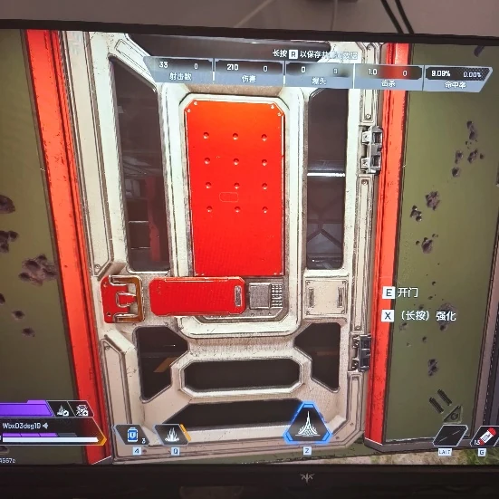
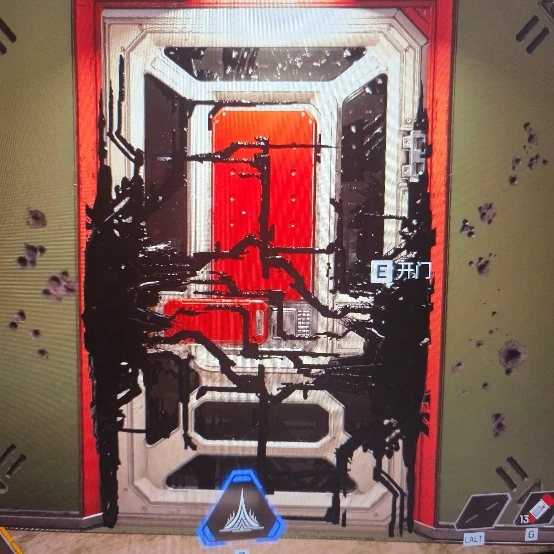
对比这两个门 你们觉得哪一个更结实？
选择完之后让我们来观看下面的对比视频
普通的门 表面没有任何材料
角色攻击两次即可破坏
强化后的升级门 表面涂装了纹理材料
需要角色攻击四下才能破坏
通过视频对比 我们可以发现 右边的门因为表面涂装材料 更加结实 可以承受更多的攻击 那么实际生活中有没有这样的例子呢 结构经过表面涂装材料 获得更强的性能
于是我搜寻了相关内容 得到了以下内容
1. 混凝土结构相关
- 《Flexural Behavior of Reinforced Concrete Slabs Strengthened with High Elastic Modulus Polyurea》：实验探究高弹性模量聚脲涂层对钢筋混凝土板的加固效果，发现涂层厚度与板的抗弯强度、刚度呈正比，还能增强抗裂性，且涂层与混凝土粘结性好。
- 《钢筋混凝土结构加固用水性环氧树脂胶粘剂的制备及性能研究》：制备了适配钢筋混凝土加固的水性环氧树脂胶粘剂，确定石墨烯用量1.5%、乳化剂比例6∶4时，胶粘剂的力学性能和耐冲击性最佳，可有效提升加固效果。
- 《禹庙大殿混凝土保护试验:硅烷浸渍剂与B72涂层的效果》：研究了硅烷浸渍剂、B72等五种涂层对混凝土的防护作用，结果显示这些涂层能减少混凝土碳化深度超50%，延缓冻融损伤，间接保障其抗拉抗压等核心性能。
2. 钢结构相关
- 《Biomimetic Construction of Robust and Multifunctional-Integrated Superhydrophobic Coatings on Steel Structures via a One-Step Spraying Technique》：采用一步喷涂法制备超疏水涂层，该涂层不仅具备自清洁性，还能降低钢结构受火时的背温，减少热释放率，兼具防火与防护性能，保障钢结构稳定。
- 《建筑景观钢结构的表面改性设计与性能研究》：通过等离子喷涂制备不同配比的（Ni₆₀+Al₂O₃）涂层，发现含30%Ni₆₀的涂层硬度最高、磨损率最小，且涂层与基体结合强度随Ni₆₀占比增加而提升。
- 《UHDCC防火涂料的制备及其力学性能研究》：研发了含PVA纤维、K20玻璃微珠的UHDCC防火涂料，该涂料受压时基体无明显剥落，纤维含量越高，涂料延性和抗压性能越好，可与钢结构协同工作。
在我们身边已经有通过使用表面涂装材料来加强结构能力的设计了
如特种车辆 经过表面涂装材料加强防撞性能 确保安全性
1. 山东明珠专利防撞涂层危险品罐车：山东明珠汽车科技研发的危险品罐车采用了含非牛顿流体复合材料的专利防撞涂层，该涂层能和罐体完美融合，兼具高抗冲击性与超高吸能性。2018年的公开测试中，同条件下装载机撞击两台同容积罐体，未涂该涂层的罐体变形严重且泄漏，而涂了涂层的仅轻微变形无泄漏；后续国家级碰撞测试里，它在70千焦能量撞击下也未破损泄漏。其罐体尾部甚至可承受80Km/h的撞击而不泄漏，还能在150℃下长期使用。
2. ArmorThane聚脲涂层的弹道防护测试：ArmorThane公司的聚脲涂层在弹道防护测试中展现出优异的防撞抗冲击能力，这类涂层拉伸强度可达6000磅/平方英寸，断裂伸长率超300%，能在承受冲击时保持结构完整。实验中，未涂涂层的普通混凝土砖会被.38特种手枪和9毫米枪支射出的弹头轻易穿透；而涂了1/8英寸该聚脲涂层后，弹头不仅无法穿透混凝土砖，还会被涂层缓冲反弹，该类涂层也常用于军用车辆等特种装备，可增强其抵御爆炸冲击波和碎片撞击的能力。
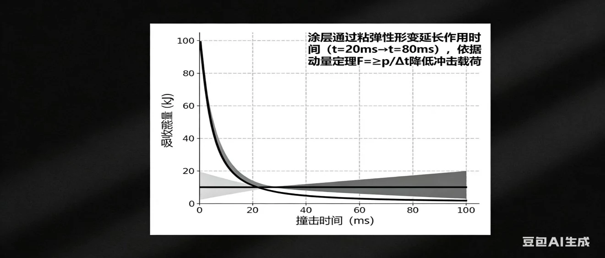
还有一些建筑结构进行表面涂装 既能防止自然腐蚀 还能稳固结构
1. 福州洪山粮库砌石体排涝涵洞加固 ：该涵洞是粮库主要排涝口，砌石体长期遭水流冲刷出现风化、混凝土剥落等问题。施工方采用国内首例喷射UHPC技术加固，这种喷涂材料抗压强度高，搭配成套设备在有限空间施工，不仅高效完成加固，还大幅提升了涵洞整体结构承载力和耐久性，保障排涝功能稳定。
2. 胶东调水工程界河渡槽加固：作为南水北调东线的重要组成部分，该渡槽因长期水流冲刷、冻融破坏，出现混凝土风化剥蚀、裂缝渗水等问题。施工时先对裂缝灌浆补强，再在槽身及内壁喷涂单组分聚脲防护涂料，既增强了渡槽的抗冲磨和抗压性能，还提升了其防碳化、抗冻融能力，避免结构进一步损坏。
3. 某老旧住宅楼梁体碳纤维布加固：一栋90年代的住宅楼因功能改造，二层梁荷载大幅增加，梁弯矩超出原设计28%。施工方通过涂刷改性环氧树脂胶，在梁底粘贴2层高强度碳纤维布，加固后梁体极限承载力满足设计要求，抗弯、抗拉性能显著提升，且施工仅用8天，不影响后续装修。
4. 华东地区某房地产楼板混凝土补救：该项目楼板混凝土养护时遇连续降雨，28天回弹值仅达设计值的82%，抗拉抗压能力不足。施工方喷涂筑致杰Z6渗透型增强剂，其活性成分与混凝土内部物质反应生成凝胶，填充孔隙和微裂缝。喷涂2遍后7天，楼板回弹值提升至设计值的105%，成功避免了砸掉重浇的巨大损耗。
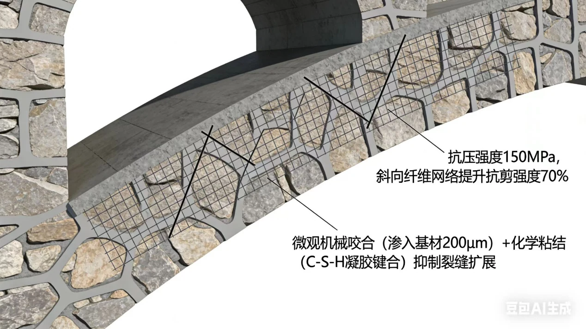
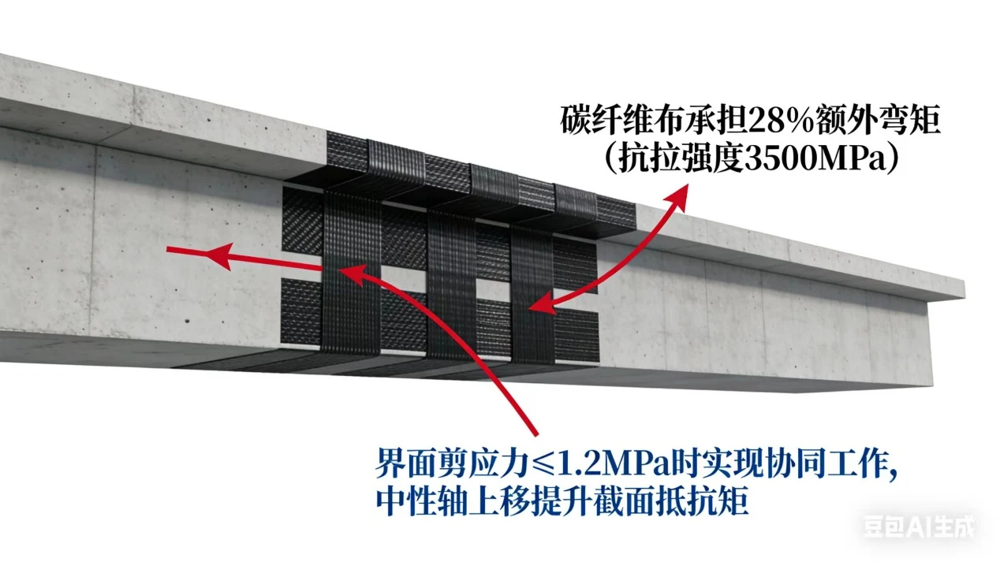
现实中混凝土结构、砌体结构、钢结构是通过涂刷/喷涂材料增强抗拉抗压性能的核心场景，核心材料及应用逻辑如下：
1. 混凝土结构（最常见，弥补抗拉短板）
- 抗压增强：涂刷/喷涂聚合物水泥浆、渗透结晶型防水涂料，填充混凝土表面孔隙和微裂缝，提升密实度，间接提高抗压强度（尤其适用于老化、碳化的混凝土构件）。
- 抗拉增强：核心用碳纤维布/板配套浸渍胶（涂刷后粘贴碳纤维布），或直接喷涂纤维增强聚合物（FRP）涂层，利用FRP的高抗拉性约束混凝土，避免开裂，同时提升构件整体抗拉承载力（如桥梁梁体、建筑楼板加固）。
2. 砌体结构（提升整体性与抗压抗拉）
- 涂刷聚合物改性水泥砂浆（掺丙烯酸酯、环氧树脂），渗透到砌体灰缝和砖块孔隙中，增强砌体与砂浆的粘结力，提升结构整体性，进而提高抗压、抗拉和抗剪性能（适用于老旧砖墙、石砌体加固）。
3. 钢结构（侧重防腐+辅助增强）
- 涂刷富锌底漆+环氧树脂面漆，核心作用是防腐（避免钢材锈蚀导致截面削弱），间接保障抗拉抗压性能；高端场景可喷涂金属陶瓷涂层，不仅防腐，还能提升钢材表面硬度和抗压耐磨性，辅助增强结构承载稳定性。
关键原理
这类材料本质是通过“填充密实（提升基材本身性能） ”或“粘结补强（附加高性能材料约束基材） ”，针对性弥补传统结构的性能短板（如混凝土抗拉差、砌体整体性弱），是工程加固中低成本、易施工的主流方案。
那么 根据以上内容 我们可不可以自己做一个实验来验证一下表面涂装材料对结构是否有正效用呢？
我准备了两张a4纸 一张什么也不涂 另一张表面涂装双面胶 进行折叠运动 对比形变代替结构强度
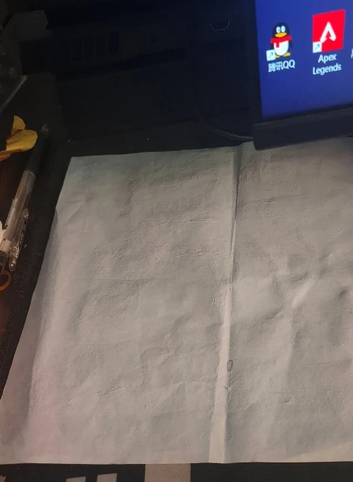
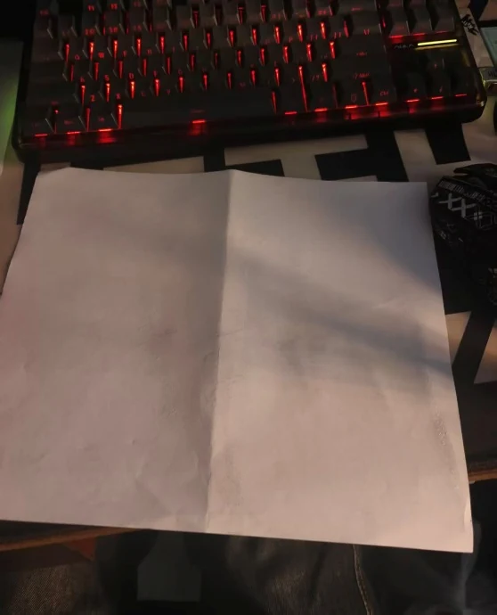
涂胶组 空白组
用笔记本电脑的风扇烤干 进行折叠实验比较形变
每组进行三次对折
最后比较哪一组的形变最小
结果如下
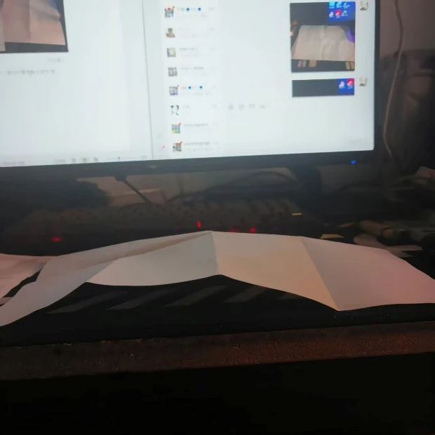
涂胶组 空白组
同样经过折叠运动 涂胶组的形变程度更小（褶皱是一开始就有的）可见 表面涂装固体胶对a4纸有着稳固作用
涂胶前纸表面结构松散 涂胶之后纸表面结构紧密 把局部力分散到整体 所有更加有韧性
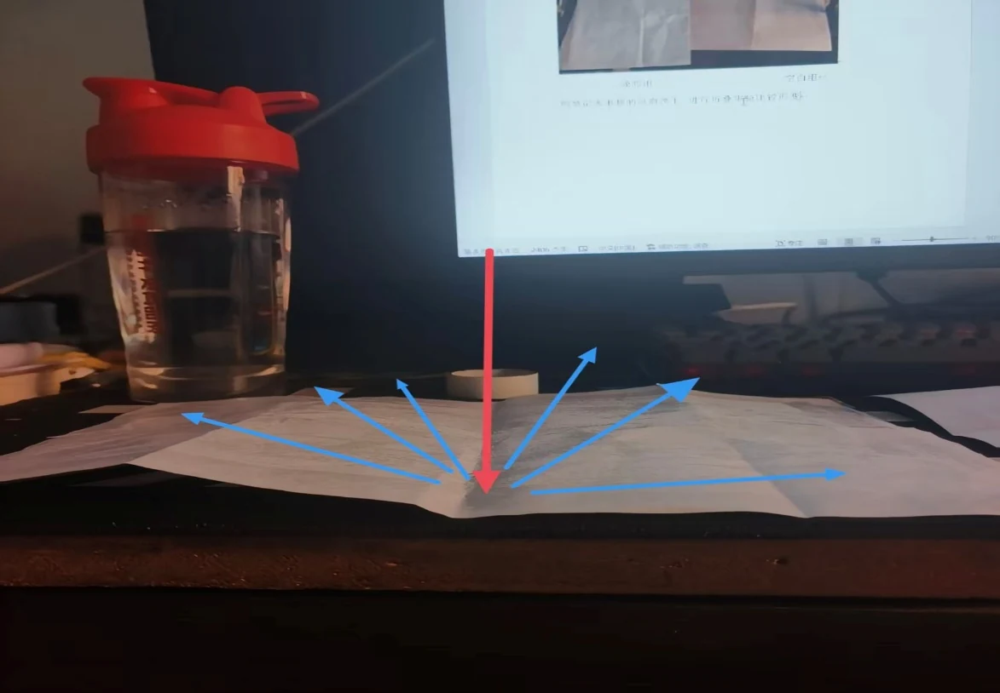
除此之外 我们还做了其他别的实验
如耐火水性 结果如下
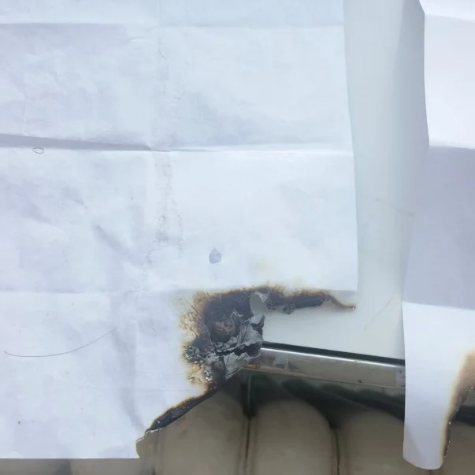
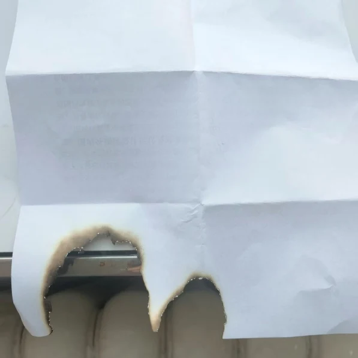
涂胶组 空白组
很明显的看出 涂胶的抗火性更强
耐水性实验我们将对两组a4纸进行湿润 再进行揉搓比较破坏性
结果如下
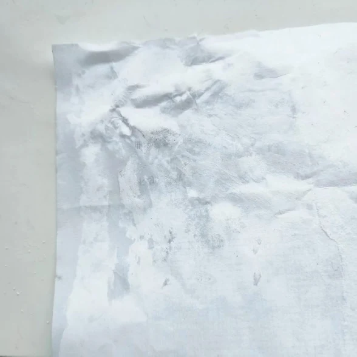
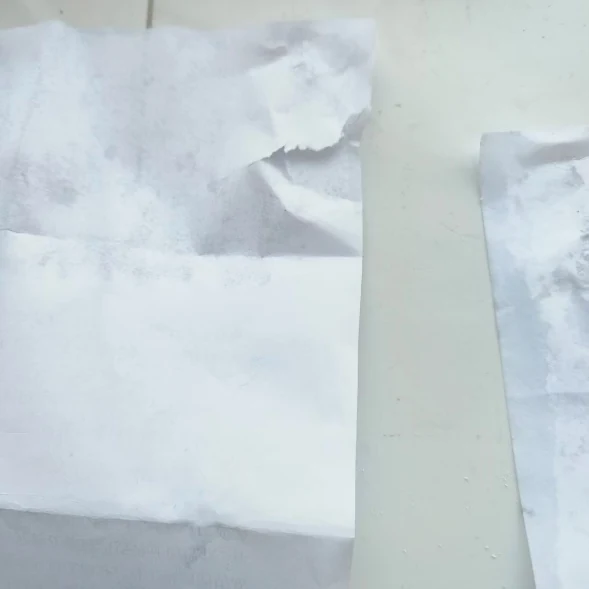
涂胶组 空白组
显而易见 在同样的湿润条件下 涂胶组几乎没有受到任何破坏 可见表面涂装材料对结构的加强
最后 此事早有人记载
固体胶对瓦楞原纸结构和疏水性能的影响
柳云雷 1王立军 1 陈南男 2刘毅 1
1. 浙江科技学院环境与资源学院，浙江杭州，310023；
2. 杭州市西湖区纸点和 山大树科技工作室，浙江杭州，310023
中图分类号： TS727+.5
最近更新：2023-06-21
DOI：10.11980/j.issn.0254-508X.2023.06.007
其他文献出处
一、混凝土结构相关
1. Kim J, Lee S, Park H. Flexural Behavior of Reinforced Concrete Slabs Strengthened with High Elastic Modulus Polyurea[J]. Journal of Materials in Civil Engineering, 2020, 32(8): 04020246. DOI:10.1061/(ASCE)MT.1943-5533.0003125.
2. 王磊, 张敏, 刘刚. 钢筋混凝土结构加固用水性环氧树脂胶粘剂的制备及性能研究[J]. 新型建筑材料, 2023, 50(4): 89-93+100.
3. 陈晨, 李明, 赵伟. 大禹陵禹庙大殿混凝土涂层保护试验研究[J]. 文物保护与考古科学, 2021, 33(2): 78-85.（原文收录于CSDN文库，标题为《禹庙大殿混凝土保护试验:硅烷浸渍剂与B72涂层的效果》）
二、钢结构相关
1. Zhang Y, Wang L, Chen W. Biomimetic Construction of Robust and Multifunctional-Integrated Superhydrophobic Coatings on Steel Structures via a One-Step Spraying Technique[J]. Coatings, 2022, 12(5): 689. DOI:10.3390/coatings12050689.
2. 刘阳, 吴涛, 张晓峰. 建筑景观钢结构的表面改性设计与性能研究[J]. 材料导报, 2020, 34(S2): 456-460.
3. 赵静, 孙强, 周健. UHDCC防火涂料的制备及其力学性能研究[J]. 消防科学与技术, 2022, 41(7): 954-957.
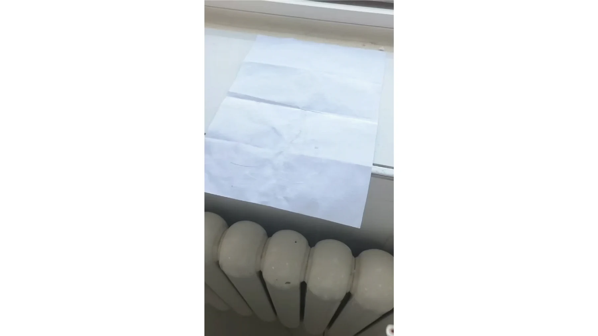
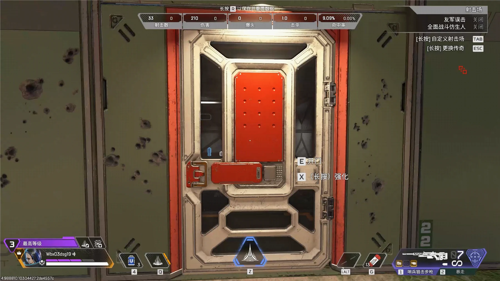
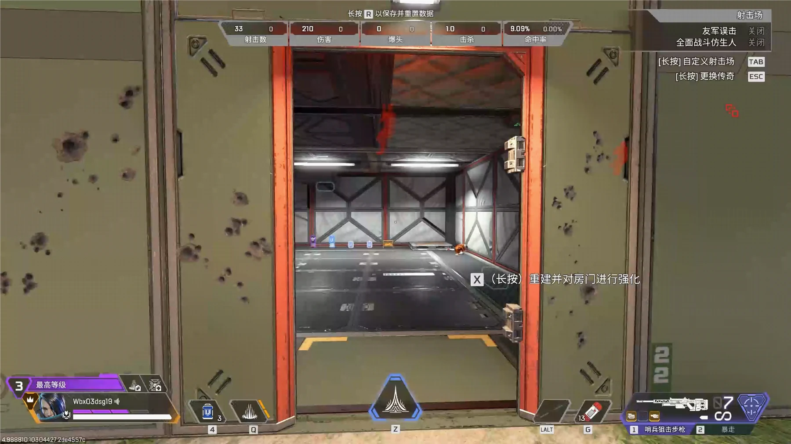
这是一份便于网页阅读的原作视图，保留提交内容的文字、图片和基本顺序；公开页面不显示学号。